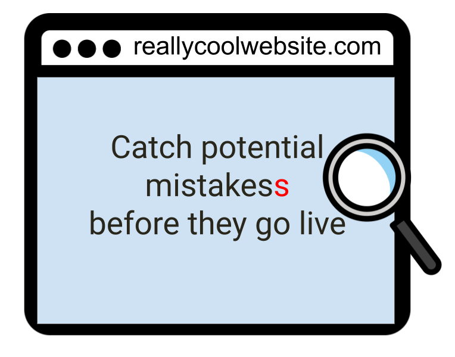

<!DOCTYPE html>

<html>

<head>

<meta charset="utf-8" />
<meta name="generator" content="pandoc" />
<meta http-equiv="X-UA-Compatible" content="IE=EDGE" />


<title> OTTR - GitHub sites for busy people</title>

<script src="site_libs/header-attrs-2.25/header-attrs.js"></script>
<script src="site_libs/jquery-3.6.0/jquery-3.6.0.min.js"></script>
<meta name="viewport" content="width=device-width, initial-scale=1" />
<link href="site_libs/bootstrap-3.3.5/css/bootstrap.min.css" rel="stylesheet" />
<script src="site_libs/bootstrap-3.3.5/js/bootstrap.min.js"></script>
<script src="site_libs/bootstrap-3.3.5/shim/html5shiv.min.js"></script>
<script src="site_libs/bootstrap-3.3.5/shim/respond.min.js"></script>
<style>h1 {font-size: 34px;}
       h1.title {font-size: 38px;}
       h2 {font-size: 30px;}
       h3 {font-size: 24px;}
       h4 {font-size: 18px;}
       h5 {font-size: 16px;}
       h6 {font-size: 12px;}
       code {color: inherit; background-color: rgba(0, 0, 0, 0.04);}
       pre:not([class]) { background-color: white }</style>
<script src="site_libs/navigation-1.1/tabsets.js"></script>
<link href="site_libs/highlightjs-9.12.0/default.css" rel="stylesheet" />
<script src="site_libs/highlightjs-9.12.0/highlight.js"></script>
<link href="site_libs/font-awesome-6.4.2/css/all.min.css" rel="stylesheet" />
<link href="site_libs/font-awesome-6.4.2/css/v4-shims.min.css" rel="stylesheet" />
  <html>
  
  <head>
  <title>Title</title>
  </head>
  
  <body>
  
  <!-- Global site tag (gtag.js) - Google Analytics -->
  <script async src="https://www.googletagmanager.com/gtag/js?id=G-3GCRY8403S"></script>
  <script>
    window.dataLayer = window.dataLayer || [];
    function gtag(){dataLayer.push(arguments);}
    gtag('js', new Date());
    
    gtag('config', 'G-3GCRY8403S');
  </script>
      
  </body>
  </html>

<style type="text/css">
  code{white-space: pre-wrap;}
  span.smallcaps{font-variant: small-caps;}
  span.underline{text-decoration: underline;}
  div.column{display: inline-block; vertical-align: top; width: 50%;}
  div.hanging-indent{margin-left: 1.5em; text-indent: -1.5em;}
  ul.task-list{list-style: none;}
    </style>

<style type="text/css">code{white-space: pre;}</style>
<script type="text/javascript">
if (window.hljs) {
  hljs.configure({languages: []});
  hljs.initHighlightingOnLoad();
  if (document.readyState && document.readyState === "complete") {
    window.setTimeout(function() { hljs.initHighlighting(); }, 0);
  }
}
</script>


<link rel="stylesheet" href="style.css" type="text/css" />


<style type = "text/css">
.main-container {
  max-width: 940px;
  margin-left: auto;
  margin-right: auto;
}
img {
  max-width:100%;
}
.tabbed-pane {
  padding-top: 12px;
}
.html-widget {
  margin-bottom: 20px;
}
button.code-folding-btn:focus {
  outline: none;
}
summary {
  display: list-item;
}
details > summary > p:only-child {
  display: inline;
}
pre code {
  padding: 0;
}
</style>


<style type="text/css">
.dropdown-submenu {
  position: relative;
}
.dropdown-submenu>.dropdown-menu {
  top: 0;
  left: 100%;
  margin-top: -6px;
  margin-left: -1px;
  border-radius: 0 6px 6px 6px;
}
.dropdown-submenu:hover>.dropdown-menu {
  display: block;
}
.dropdown-submenu>a:after {
  display: block;
  content: " ";
  float: right;
  width: 0;
  height: 0;
  border-color: transparent;
  border-style: solid;
  border-width: 5px 0 5px 5px;
  border-left-color: #cccccc;
  margin-top: 5px;
  margin-right: -10px;
}
.dropdown-submenu:hover>a:after {
  border-left-color: #adb5bd;
}
.dropdown-submenu.pull-left {
  float: none;
}
.dropdown-submenu.pull-left>.dropdown-menu {
  left: -100%;
  margin-left: 10px;
  border-radius: 6px 0 6px 6px;
}
</style>

<script type="text/javascript">
// manage active state of menu based on current page
$(document).ready(function () {
  // active menu anchor
  href = window.location.pathname
  href = href.substr(href.lastIndexOf('/') + 1)
  if (href === "")
    href = "index.html";
  var menuAnchor = $('a[href="' + href + '"]');

  // mark the anchor link active (and if it's in a dropdown, also mark that active)
  var dropdown = menuAnchor.closest('li.dropdown');
  if (window.bootstrap) { // Bootstrap 4+
    menuAnchor.addClass('active');
    dropdown.find('> .dropdown-toggle').addClass('active');
  } else { // Bootstrap 3
    menuAnchor.parent().addClass('active');
    dropdown.addClass('active');
  }

  // Navbar adjustments
  var navHeight = $(".navbar").first().height() + 15;
  var style = document.createElement('style');
  var pt = "padding-top: " + navHeight + "px; ";
  var mt = "margin-top: -" + navHeight + "px; ";
  var css = "";
  // offset scroll position for anchor links (for fixed navbar)
  for (var i = 1; i <= 6; i++) {
    css += ".section h" + i + "{ " + pt + mt + "}\n";
  }
  style.innerHTML = "body {" + pt + "padding-bottom: 40px; }\n" + css;
  document.head.appendChild(style);
});
</script>

<!-- tabsets -->

<style type="text/css">
.tabset-dropdown > .nav-tabs {
  display: inline-table;
  max-height: 500px;
  min-height: 44px;
  overflow-y: auto;
  border: 1px solid #ddd;
  border-radius: 4px;
}

.tabset-dropdown > .nav-tabs > li.active:before, .tabset-dropdown > .nav-tabs.nav-tabs-open:before {
  content: "\e259";
  font-family: 'Glyphicons Halflings';
  display: inline-block;
  padding: 10px;
  border-right: 1px solid #ddd;
}

.tabset-dropdown > .nav-tabs.nav-tabs-open > li.active:before {
  content: "\e258";
  font-family: 'Glyphicons Halflings';
  border: none;
}

.tabset-dropdown > .nav-tabs > li.active {
  display: block;
}

.tabset-dropdown > .nav-tabs > li > a,
.tabset-dropdown > .nav-tabs > li > a:focus,
.tabset-dropdown > .nav-tabs > li > a:hover {
  border: none;
  display: inline-block;
  border-radius: 4px;
  background-color: transparent;
}

.tabset-dropdown > .nav-tabs.nav-tabs-open > li {
  display: block;
  float: none;
}

.tabset-dropdown > .nav-tabs > li {
  display: none;
}
</style>

<!-- code folding -->


</head>

<body>


<div class="container-fluid main-container">


<div class="navbar navbar-default  navbar-fixed-top" role="navigation">
  <div class="container">
    <div class="navbar-header">
      <button type="button" class="navbar-toggle collapsed" data-toggle="collapse" data-bs-toggle="collapse" data-target="#navbar" data-bs-target="#navbar">
        <span class="icon-bar"></span>
        <span class="icon-bar"></span>
        <span class="icon-bar"></span>
      </button>
      <a class="navbar-brand" href="index.html">OTTR </a>
    </div>
    <div id="navbar" class="navbar-collapse collapse">
      <ul class="nav navbar-nav">
        <li>
  <a href="index.html">
    <span class="fa fa-home"></span>
     
    
  </a>
</li>
<li class="dropdown">
  <a href="#" class="dropdown-toggle" data-toggle="dropdown" role="button" data-bs-toggle="dropdown" aria-expanded="false">
    <span class="fa fa-play"></span>
     
    Getting Started
     
    <span class="caret"></span>
  </a>
  <ul class="dropdown-menu" role="menu">
    <li>
      <a href="getting_started.html#prerequisites-for-using-ottr">
        <span class="fa fa-asterisk"></span>
         
        Prerequisites
      </a>
    </li>
    <li>
      <a href="getting_started.html#starting-a-new-ottr-course">
        <span class="fa fa-flag-checkered"></span>
         
        Starting a new OTTR course/website
      </a>
    </li>
  </ul>
</li>
<li>
  <a href="editing_website.html">
    <span class="fa fa-pen"></span>
     
    OTTR Website
  </a>
</li>
<li class="dropdown">
  <a href="#" class="dropdown-toggle" data-toggle="dropdown" role="button" data-bs-toggle="dropdown" aria-expanded="false">
    <span class="fa fa-lightbulb"></span>
     
    OTTR Courses
     
    <span class="caret"></span>
  </a>
  <ul class="dropdown-menu" role="menu">
    <li>
      <a href="writing_content_courses.html">
        <span class="fa fa-pen"></span>
         
        Start writing!
      </a>
    </li>
    <li>
      <a href="writing_content_courses.html#set-up-images">
        <span class="fa fa-images"></span>
         
        Set up images
      </a>
    </li>
    <li>
      <a href="course_publishing.html#choosing-publishing-platforms">
        <span class="fa fa-tasks"></span>
         
        Choosing course publishing platforms
      </a>
    </li>
    <li>
      <a href="course_publishing.html#publishing-with-bookdown">Publishing with Bookdown</a>
    </li>
    <li>
      <a href="course_publishing.html#publishing-with-leanpub">Publishing with Leanpub</a>
    </li>
    <li>
      <a href="course_publishinghtml#publishing-with-coursera">Publishing with Coursera</a>
    </li>
  </ul>
</li>
<li class="dropdown">
  <a href="#" class="dropdown-toggle" data-toggle="dropdown" role="button" data-bs-toggle="dropdown" aria-expanded="false">
    About
     
    <span class="caret"></span>
  </a>
  <ul class="dropdown-menu" role="menu">
    <li>
      <a href="customize-robots.html">
        <span class="fa fa-robot"></span>
         
        Customizing Checks
      </a>
    </li>
    <li>
      <a href="customize-style.html">
        <span class="fa fa-palette"></span>
         
        Customizing style
      </a>
    </li>
    <li>
      <a href="customize-docker.html">
        <span class="fa fa-gears"></span>
         
        Customizing Docker
      </a>
    </li>
    <li>
      <a href="more_features.html#citing-sources">
        <span class="fa fa-quote-left"></span>
         
        Citing sources
      </a>
    </li>
    <li>
      <a href="more_features.html#giving-credits-to-contributors">
        <span class="fa fa-award"></span>
         
        Giving credits
      </a>
    </li>
    <li>
      <a href="more_features.html#borrowing-chapters">
        <span class="fa fa-bookmark"></span>
         
        Borrowing chapters
      </a>
    </li>
    <li>
      <a href="more_features.html#compatibility-with-google-docs">
        <span class="fa fa-file"></span>
         
        Compatibility with Google Docs
      </a>
    </li>
    <li>
      <a href="more_features.html#google-analytics">
        <span class="fa fa-chart-line"></span>
         
        Google Analytics
      </a>
    </li>
    <li>
      <a href="ottr-fy.html">
        <span class="glyphicon glyphicon-sunglasses"></span>
         
        OTTR-fying an existing repository
      </a>
    </li>
    <li>
      <a href="examples.html">About OTTR babies</a>
    </li>
  </ul>
</li>
<li>
  <a href="faqs.html">
    <span class="fa fa-handshake"></span>
     
    Help
  </a>
</li>
<li>
  <a href="https://github.com/jhudsl/OTTR_Template">
    <span class="fa fa-github"></span>
     
    
  </a>
</li>
      </ul>
      <ul class="nav navbar-nav navbar-right">
        
      </ul>
    </div><!--/.nav-collapse -->
  </div><!--/.container -->
</div><!--/.navbar -->

<div id="header">


<h1 class="title toc-ignore">
OTTR - GitHub sites for busy people</h1>

</div>


<div class="banner_color">
<p><br></p>
</div>
<p></p>
<ul>
<li><strong>No installing software needed</strong> - OTTR completely
runs through GitHub so you don’t have to render things locally or
install anything on your computer.</li>
<li><strong>Previews before you publish</strong> Before you publish your
changes to your Github-based websites, take a look at the preview that
OTTR automatically provides.</li>
<li><strong>Automatic spell and url checks</strong> Have <a
href="./getting_started.html">Github action robots</a> do your
repetitive tasks like spell check and re-rendering.</li>
<li><strong>Customizable branding</strong> Follow our guides to <a
href="./customize-style.html">customize the style of your website or
course</a> to show your own branding.</li>
<li><strong>Avoid dependency hell</strong> If you plan to include code
examples in your website or course use <a
href="https://hub.docker.com/repository/docker/jhudsl/base_ottr">our
Docker image</a> for consistency across authors as well as to help you
struggling with installing various packages.<br />
</li>
<li><strong>Customize your own Docker image</strong> Follow our guides
to <a href="./customize-docker.html">customize the docker image for
course or website you’re making</a>.</li>
</ul>
<p>
<br></p>
<center>
<a href="https://ottrproject.org/getting_started.html">
 </a>
</center>
<p><br></p>
<div id="ottr-for-courses" class="section level2">
<h2>OTTR for courses</h2>
<p>OTTR originally started as a way to publish full online courses. If
this is your interest, OTTR can help you write one course but publish it
in three places.</p>
<p></p>
<ul>
<li>Edit and write a course in <a
href="https://rmarkdown.rstudio.com/">R Markdown files</a> and have it
published to multiple different platforms:
<ul>
<li><a href="https://bookdown.org/">Bookdown</a></li>
<li><a
href="https://leanpub.com/bookstore?type=course">Leanpub</a><br />
</li>
<li><a href="https://www.coursera.org/">Coursera</a><br />
</li>
</ul></li>
<li>Use automagic conversion to ease the lift of prepping the material
for different platforms. <br></li>
</ul>
</div>
<div id="how-to-cite-ottr" class="section level2">
<h2>How to Cite OTTR</h2>
<p><strong><a href="https://arxiv.org/abs/2203.07083">See the OTTR
pre-print here!</a>📝👀</strong></p>
<p>Here’s the BibTeX formatted citation for the pre-print:</p>
<pre><code>@misc{ottr,
  doi = {10.48550/ARXIV.2203.07083},
  url = {https://arxiv.org/abs/2203.07083},
  author = {Savonen, Candace and Wright, Carrie and Hoffman, Ava M. and Muschelli, John and Cox, Katherine and Tan, Frederick J. and Leek, Jeffrey T.},
  keywords = {Computers and Society (cs.CY), FOS: Computer and information sciences, FOS: Computer and information sciences},
  title = {Open-source Tools for Training Resources -- OTTR},
  publisher = {arXiv},
  year = {2022},
  copyright = {Creative Commons Attribution 4.0 International}
}</code></pre>
</div>

<hr>

<center>
  <script async src="https://cse.google.com/cse.js?cx=22c03a049bf7a472a">
</script>
<div class="gcse-searchbox-only"></div>
  
  <br>
  Your feedback is greatly appreciated! You can fill out <a href="https://forms.gle/jvFjnhqt5V1E9LbQ9">this form </a>
  <br>
  or <a href="https://github.com/jhudsl/OTTR_Template/issues/new/choose">file a GitHub issue</a>.
    <br>
  <br><font size="1">Otter images by <a href = https://www.linkedin.com/in/jimin-hwang-549835142/>Jimin Hwang</a>.</font>
  <br>
</div>
</center>


</div>

<script>

// add bootstrap table styles to pandoc tables
function bootstrapStylePandocTables() {
  $('tr.odd').parent('tbody').parent('table').addClass('table table-condensed');
}
$(document).ready(function () {
  bootstrapStylePandocTables();
});


</script>

<!-- tabsets -->

<script>
$(document).ready(function () {
  window.buildTabsets("TOC");
});

$(document).ready(function () {
  $('.tabset-dropdown > .nav-tabs > li').click(function () {
    $(this).parent().toggleClass('nav-tabs-open');
  });
});
</script>

<!-- code folding -->


<!-- dynamically load mathjax for compatibility with self-contained -->
<script>
  (function () {
    var script = document.createElement("script");
    script.type = "text/javascript";
    script.src  = "https://mathjax.rstudio.com/latest/MathJax.js?config=TeX-AMS-MML_HTMLorMML";
    document.getElementsByTagName("head")[0].appendChild(script);
  })();
</script>

</body>
</html>
